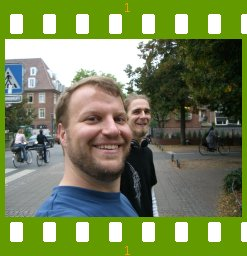

People of openSUSE: Seth Arnold

Today you can read which answers to the ‘People of openSUSE’ questions the AppArmor developer Seth Arnold provides.
- Nickname(s): sarnold, sars, sarny, sarsy
- Homepage: http://sarnold.org/
- Blog: None, I’ve found blogs removes too much personal communication — people who’ve started keeping blogs I’ve found tend to talk less with their friends(!) — all the recent news and stories have been told, so..
- Favorite season: Oooh, tough question — I prefer the clothes for winter, but the endless grey skies are grating. When summer’s only about 70 degrees F (21C), it’s pretty enjoyable.. Of course, the new green buds of spring is pretty wonderful — especially when forests start to smell of soil and new growth. Not autumn. Nope.
- Motto: I was a boyscout as a kid, so “Be Prepared” is pretty deeply ingrained, but I’m sure I say “I have to run to catch my bus” more often these days.
Please introduce yourself!
I’m 29 years old, born in Montana, USA, moved to Portland, Oregon when I was ten. I love the Portland weather, mostly moderate, and so beautifully green. I’ve worked on AppArmor for six years; I started with Immunix in 2001 (then WireX Communications) to work on the Immunix Secure OS, a Linux distribution built with StackGuard, FormatGuard, and applications confined with AppArmor (then SubDomain).
Immunix was acquired by Novell just over two years ago, and since then I’ve been working to help improve AppArmor for wider use — we would like AppArmor to be included in the mainline Linux kernel, so that more people could enjoy the benefits of easy mandatory access control.
Lately I’ve been learning German; I started a determined effort in late 2006, and have really enjoyed reading whatever I can get my hands on — Frohliche Weihnachten, Pauli; Ich Hab Euch So Lieb; Demian; the Harry Potter books; Dear Doosie; Ich Bin Kein Berliner; Brothers Grimm, among others. I tried reading Faust, but it was a wasted effort. Maybe later.
I’ve been fortunate enough to give occasional presentations on AppArmor to customers and the community, and have really enjoyed the occasional travel — my first trip out of North America was to show AppArmor to Novell customers in Stockholm, Sweden, and I got the travel bug.
Tell us about the background to your computer use.
I’ve been playing with computers as long as I can recall — my father had a slick Timex Sinclair when I was young, and when we upgraded to a Commodore 64, I was hooked. Throughout school, I helped teachers and librarians maintain the school computers, and got my first job before I could drive — SCO’s 3.2.4.2 and Novell Netware 3.11.
My first exposure to Linux was probably in 1994, when we wanted to replace our highly expensive and inflexible SCO machine with a Linux machine. (Sadly, our database was completely unprepared to handle Linux’s 32 bit inode numbers, so our billing remained on the SCO machine for many more years.) When we networked all our locations, I configured all the usual services: NAT, Squid, Mars NWE, Samba, UUCP, MMDF, sendmail.
When and why did you start using openSUSE/SUSE Linux?
My first SUSE Linux deployment was probably in 1995. We had heard the Linux distribution with the strange German name had a lot of nice features, and we weren’t disappointed.
When did you join the openSUSE community and what made you do that?
When Novell first acquired Immunix, the SUSE Linux community was very different. The first thing we mentioned when acquired was that an open bug reporting tool would have been useful to us, before being acquired, and before too long, openSUSE had an open bugzilla! While this was a move that was already underway when we were acquired, it still drove home the point that openSUSE is what we make of it — and I’d like to make it the highest quality community and distribution.
In what way do you participate in the openSUSE project?
I try to answer some questions on the openSUSE mail lists and IRC channels, when I’ve got some spare time. More substantially, I’ve helped write a new feature for AppArmor — a network repository to integrate with our profile authoring tools. The repository will allow users to start writing profiles by downloading profiles uploaded by other users — and once their applications are profiled, allow uploading the profile for others to use.
What especially motivates you to participate in the openSUSE project?
I love seeing users get excited about my software. I love helping people solve their problems. This is a great place to do both. :)
What do you think was your most important contribution to the openSUSE project/community or what is the contribution that you’re most proud of?
If the profile repository works as I expect, it’ll be the one.
When do you usually spend time on the openSUSE project?
Weekdays, ten am until seven pm, sometimes evenings too; I’m not so good with mornings, and weekends I like to spend more of my time outdoors.
Three words to describe openSUSE? Or make up a proper slogan!
System und Software Engineering! Four words, mixed English and German…
What do you think is missing or underrated in the distribution or the project?
Unencumbered media codecs is the biggest missing piece.
It’d be nice if we could work with hardware vendors to try to prepare ‘Linux-ready’ machines that work well with only opensource drivers. (Some are already doing this, but there’s more room for improvement, and we could be part of the solution.)
I think there’d be a real opportunity for educational machines that run multi-seat — think a single cheap machine with four video cards, four monitors, four keyboards, four mice. There’s no reason why schools need one computer per student in typical labs — one machine per four kids ought to be overkill for many environments.
What do you think the future holds for the openSUSE project?
Perhaps it’s for the best that we’ll find the future a surprise when it arrives. :) The trend with Kiwi, openSUSE Build Service, seems to be including more people to enable a wider variety of customized uses. It’ll be interesting to see how far this trend can continue.
A person asks you why he/she should choose openSUSE instead of other distribution/OS. What would be your arguments to convince him/her to pick up openSUSE?
Just try it. After fifteen years of building high quality value-added Linux distributions, the SuSE engineers are good at it. :) The yast single point of configuring a system is immensely useful for configuring nearly everything on a system. Contrary to some distributions, we provide more packages to address a given problem; contrary to other distributions, we provide a few years of maintenance for released distributions, and provide new software every nine months or so. This allows users to upgrade at their own pace, to either track upstream development pretty closely or run stable systems for a few years, depending on their needs.
Which members of the openSUSE community have you met in person?
AJ, Darix, Daemon, Notlocalhorst, come to mind immediately. Dozens more SuSE employees, and hundreds of enthusiastic users.
How many icons are currently on your desktop?
None. Ion3’s a bit ascetic in this department.
What is the application you can’t live without? And why?
Vim. I tried for many years to avoid learning the vim-specific extensions, but they were just too useful. I gave in. Moving to another vi-clone now would be far too hard.
It’d be difficult to leave mutt behind, though I wish it had vfolders. But I was thrilled to find mutt — elm keybindings and mime support!
Irssi’s pretty slick, but I find it’s not exactly right. I wish I had the time to replace it.
Which application or feature should be invented as soon as possible?
Something to give me the home phone numbers of spammers… Far too much time is lost each day to this mess.
Which is your preferred text editor? And why?
I prefer Vim; it’s got the vi keybindings I’ve used for 13, 14, years, plus some other really cool features. (Try the visual block feature some day in conjunction with I or A. Beautiful.)
Which famous person would you want to join the openSUSE community?
I’m not sure — famous people tend to bring along as many detractors as admirers. I’d rather get enthusiastic people who love helping others any day.
Which computer related skills would you like to have?
I’d love nothing more than to find the time to try to write better text typesetting tools, music composing tools (not that I have any musical ability, I’d just like to write a tool that could write me an endless amount of new music), communication tools (mutt and irssi have nice points, but aspects of them could stand some serious improvement), and to revive Nat’s “dashboard” tool.
The Internet crashes for a whole week. How would you feel, what would you do?
It’d be an annoyance to be disconnected from friends, but I would enjoy a week to wander around a foreign city, or hike in the woods.
Which is your favorite movie scene?
“Korben Dallas Multipass!”
I have no idea why.
Star Trek or Star Wars?
Star Trek, The Next Generation. I know half the point of Star Wars is the campyness, but I have to think there’s a good story in there dying to get out…
What is your favorite food and drink?
Margherita pizza is pretty good. But there’s a Doener shop in Schwabach that I love… And when in Prague, Diavola pizza. Drink, I like iced lattes.
Favorite game or console (in your childhood and nowadays)?
Jumpman on the Commodore 64 was fantastic. Super Mario Brothers was great.
Which city would you like to visit?
Only one? :) Even one-per-coutry would be difficult.
What is your preferred way to spend your vacation?
Definitely travel — I love to spend ten, twelve, hours per day walking around completely new cities, talking with friends in those cities in a nice restaurant in the evenings.
Someone gives you $1.000.000. What would you do with the money?
I’d buy a house and invest the remainder. I could do a fair bit of traveling on the income you could get for that kind of investment..
If traveling through time was possible, when would we be most likely to meet you?
I’d love to be present to see the advances in particle physics of the early 1900s, but I’d also like to see if we ever get a grand unified theory — so perhaps 2100?
There’s a thunderstorm outside. Do you turn off your computer?
Hooooray laptops!
Have your ever missed an appointment because you forgot about it while sitting at your computer?
Yup. I miss the bus ride home due to my computer a few times each month. (Some weeks, more often than not.)
Show us a picture of something, you have always wanted to share!
http://farm1.static.flickr.com/160/430143383_6b3723cded_o.jpg
{kind=link}
Apologies to the original photographer for the uncredited photo.
You couldn’t live without…
Trees. I like trees. I’d have a -very- difficult time living someplace that didn’t have huge trees.
Which question was the hardest to answer?
Definitely the introduction was the more difficult to answer — open-ended questions are difficult for me, but I can answer specific questions all day long…
What other question would you like to answer? And what would you answer?
Oof. I take back my previous answer — this one’s harder. :)